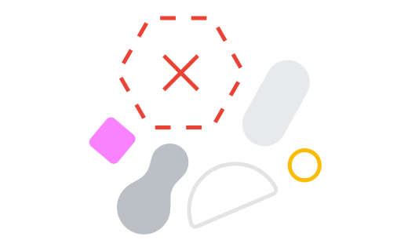

<!-- Copyright 2021 The Chromium Authors. All rights reserved.
Use of this source code is governed by a BSD-style license that can be
found in the LICENSE file. -->

<link rel="import" href="chrome://resources/html/polymer.html">
<link rel="import" href="chrome://resources/cr_elements/shared_vars_css.html">
<link rel="import" href="chrome://resources/polymer/v1_0/iron-icon/iron-icon.html">
<link rel="import" href="chrome://oobe/custom_elements.html">

<link rel="import" href="/components/oobe_icons.html">
<link rel="import" href="/components/behaviors/login_screen_behavior.html">
<link rel="import" href="/components/behaviors/multi_step_behavior.html">
<link rel="import" href="/components/behaviors/oobe_dialog_host_behavior.html">
<link rel="import" href="/components/behaviors/oobe_i18n_behavior.html">
<link rel="import" href="/components/common_styles/common_styles.html">
<link rel="import" href="/components/common_styles/oobe_dialog_host_styles.html">
<link rel="import" href="/components/dialogs/oobe_adaptive_dialog.html">

<dom-module id="os-install-element">
  <template>
    <style include="oobe-dialog-host-styles">
      ul {
        list-style-position: outside;
        padding-inline-start: 20px;
      }
      ul li::marker {
        color: var(--google-gray-700);
        font-size: 18px;
      }
      li:not(:last-child) {
        margin-bottom: 14px;
      }
    </style>

    <oobe-adaptive-dialog id="osInstallDialogIntro"
        role="dialog" for-step="intro"
        aria-label$="[[i18nDynamic(locale, 'osInstallDialogIntroTitle')]]">
      <iron-icon slot="icon" icon="oobe-32:googleg"></iron-icon>
      <h1 slot="title">[[i18nDynamic(locale, 'osInstallDialogIntroTitle')]]</h1>
      <div slot="subtitle">
        <strong>
          [[i18nDynamic(locale, 'osInstallDialogIntroSubtitle')]]
        </strong>
      </div>
      <html-echo slot="content" content="[[getIntroBodyHtml_(locale)]]"
          class="flex layout vertical center center-justified">
      </html-echo>
      <div slot="bottom-buttons">
        <oobe-next-button
            text-key="osInstallDialogIntroNextButton" class="focus-on-show"
            id="osInstallIntroNextButton"
            inverse on-click="onIntroNextButtonPressed_"></oobe-next-button>
      </div>
    </oobe-adaptive-dialog>

    <oobe-adaptive-dialog id="osInstallDialogConfirm"
        role="dialog" for-step="confirm"
        aria-label$="[[i18nDynamic(locale, 'osInstallDialogConfirmTitle')]]">
      <iron-icon slot="icon" icon="oobe-32:googleg"></iron-icon>
      <h1 slot="title">[[i18nDynamic(locale, 'osInstallDialogConfirmTitle')]]
      </h1>
      <html-echo slot="subtitle" content="[[getConfirmBodyHtml_(locale)]]">
      </html-echo>
      <div slot="bottom-buttons">
        <oobe-next-button
            text-key="osInstallDialogConfirmNextButton" class="focus-on-show"
            id="osInstallConfirmNextButton"
            inverse on-click="onConfirmNextButtonPressed_"></oobe-next-button>
      </div>
    </oobe-adaptive-dialog>

    <oobe-loading-dialog id="osInstallDialogInProgress"
        role="dialog" for-step="in-progress"
        title-key="osInstallDialogInProgressTitle"
        subtitle-key="osInstallDialogInProgressSubtitle"
        aria-label$="[[i18nDynamic(locale, 'enableDebuggingScreenTitle')]]">
      <iron-icon slot="icon" icon="oobe-32:googleg"></iron-icon>
    </oobe-loading-dialog>

    <oobe-adaptive-dialog id="osInstallDialogError"
        role="dialog" for-step="failed,no-destination-device-found"
        aria-label$="[[i18nDynamic(locale, 'osInstallDialogErrorTitle')]]">
      <iron-icon slot="icon" icon="oobe-32:warning"></iron-icon>
      <h1 slot="title">[[i18nDynamic(locale, 'osInstallDialogErrorTitle')]]</h1>
      <div slot="subtitle" for-step="no-destination-device-found">
        [[i18nDynamic(locale, 'osInstallDialogErrorNoDestSubtitle')]]
      </div>
      <html-echo slot="content" for-step="no-destination-device-found"
          class="flex layout vertical center center-justified"
          content="[[getErrorNoDestContentHtml_(locale)]]">
      </html-echo>
      <html-echo slot="subtitle" for-step="failed"
          content="[[getErrorFailedSubtitleHtml_(locale)]]">
      </html-echo>
      </div>
      <div slot="content" for-step="failed"
          class="flex layout vertical center center-justified">
        
      </div>
      <div slot="bottom-buttons">
        <oobe-text-button
            text-key="osInstallDialogSendFeedback"
            id="osInstallErrorSendFeedbackButton"
            on-click="onErrorSendFeedbackButtonPressed_"></oobe-text-button>
        <oobe-text-button
            text-key="osInstallDialogShutdownButton" class="focus-on-show"
            id="osInstallErrorShutdownButton"
            inverse on-click="onErrorShutdownButtonPressed_"></oobe-text-button>
      </div>
    </oobe-adaptive-dialog>

    <oobe-adaptive-dialog id="osInstallDialogSuccess"
        role="dialog" for-step="success"
        aria-label$="[[i18nDynamic(locale, 'osInstallDialogSuccessTitle')]]">
      <iron-icon slot="icon" icon="oobe-32:googleg"></iron-icon>
      <h1 slot="title">[[i18nDynamic(locale, 'osInstallDialogSuccessTitle')]]
      </h1>
      <div slot="bottom-buttons">
        <oobe-text-button
            text-key="osInstallDialogShutdownButton" class="focus-on-show"
            id="osInstallSuccessShutdownButton"
            inverse on-click="onSuccessShutdownButtonPressed_">
        </oobe-next-button>
      </div>
    </oobe-adaptive-dialog>
  </template>
</dom-module>
